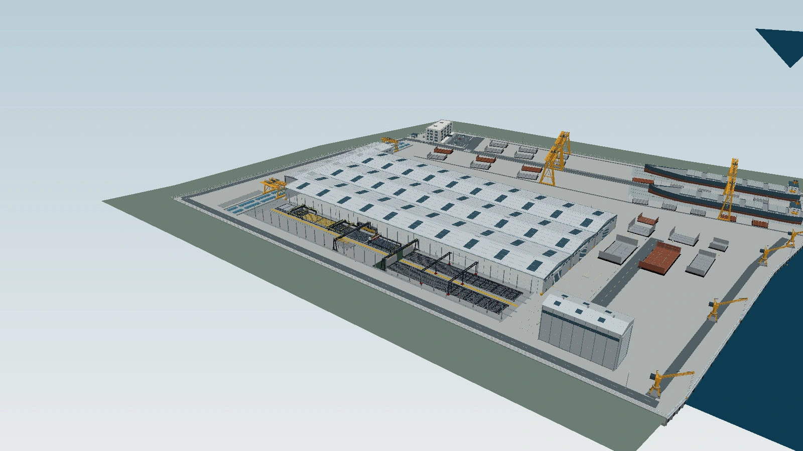

先把问题说清楚
给真实材料，说明目标、限制和当前做到哪一步。
把不懂的原理和操作一步步学明白，
再将想法落实到模型、程序和竞赛作品。
用真实项目，讲清 AI 怎样帮忙、结果怎样检查。
数字场景 / 工艺与交互
3 分钟先看一个完整项目

项目选读 / 机械、仿真与表达
3 分钟选两项展开，其余留给交流
软件开发 / 高频工作的整理
3 分钟从每天重复的操作开始
V0.2 网页交互原型；本机文件与软件启动需要桌面端接入。
怎么做从真实文件和操作习惯提出需求，AI 协助写界面与处理逻辑，再逐项检查单位、比例、格式和失败日志。
团队协作 / 真实网站
2 分钟资料、项目进度与日常协作
资料分散、进度难汇总，于是把实验室的实际规则整理成一个网站。
AI 参与页面、权限和数据关系的实现，再按成员的实际操作检查。
程序与实物 / ESP32
1 分钟先看十几秒实物视频
使用记录 / 材料与方法
4 分钟实际案例与搭配建议分开讲
这些材料来自不同项目，分别看对应工具实际参与了什么。
以下是可参考的分工，并非上面几份素材的共同制作流程。
| GPT | 整理目标与约束，做出第一版，遇到不会的操作逐步学习。 |
|---|---|
| DeepSeek | 带上同一份材料，补充推导或另一种实现，再对照结果。 |
| Muse | 按确认的脚本、画面参考和时长制作视觉素材。 |
| Claude 可选 | 安排独立审阅，检查长文、代码或方案中的遗漏。 |
交接时带上：目标、当前文件、已确认约束、待解决问题。
结束 / 留下自己的做法
1 分钟先从一个具体问题开始
一个不会的操作，一张反复处理的图纸，
一段始终调不顺的程序——
给真实材料，说明目标、限制和当前做到哪一步。
每次只推进一步，问清为什么，以及怎样确认做对。
根据结果继续修改，逐渐留下自己的判断方法。